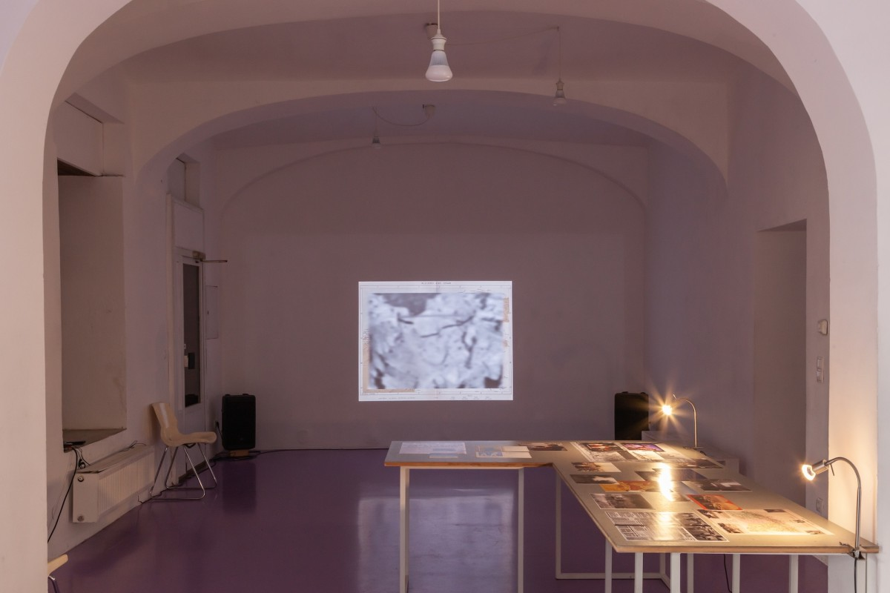

After 132 years of French colonial occupation, Algeria celebrated its independence on July 5, 1962. Algerian independence has also marked the official end of the bloody Algerian Revolution, or Algerian War of Independence (1954–1962). Over the summer of 1962, around 800.000 people left the newly independent Algeria, mostly for metropolitan France. These were the European settlers - by then called the pieds-noirs - for whom 1962 continues to represent a moment of profound rupture and the start of their exile from what they perceived to be an Algerian homeland. Fluid Grounds comes as a reflection on the pieds-noirs’s digital practices of remembrance and contestation of France’s colonial past. Divided into two parts, a video essay and a photo collage, Takriti confronts different ideologies and online practices of nostalgia through image-text or text-text collages. When examining the imagery used in both parts - imagery that circulates on the web by Instagram accounts and Facebook groups dedicated by the pied-noirs as sites of memory and nostalgia - it becomes clear that the artist’s interest does not only lay in the origin of these photos but also in their reception and their contribution to historiography. Thus, she constantly asks what can and should be shown, and likewise lends the images the possibility of opacity, of non-transparency, whereby precisely not everything can and should be seen.
Performative Screenings #85: Huda Takriti, Fluid Grounds

Info
Keywords
Spaces
Artists
Huda Takriti